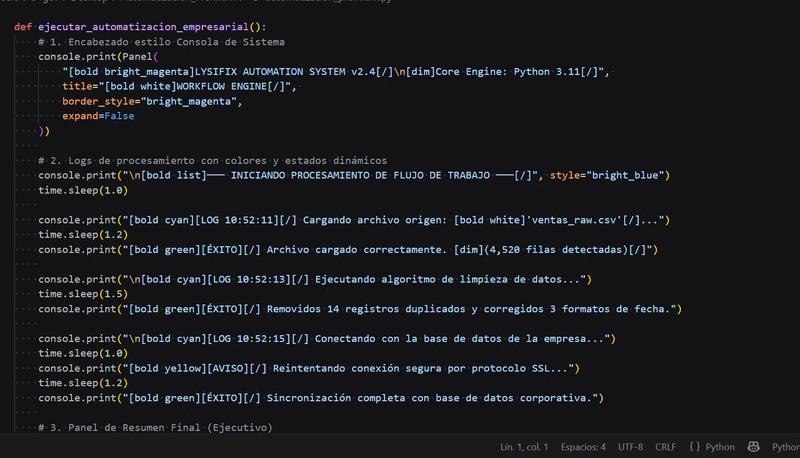
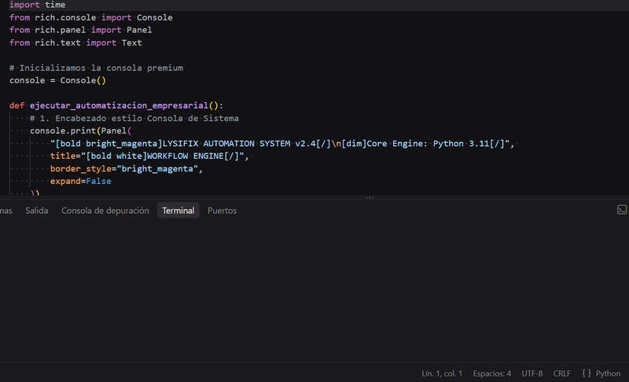

Automated File Processing
Automated file integration and data processing.
- Eliminate repetitive copy-and-paste tasks.
- Extract information from multiple JSON invoices.
- Consolidate monthly Excel reports into a single workflow.
Lysifix
Web, Software and Digital Experience
Custom web design and software solutions for entrepreneurs and businesses looking for digital products with style, performance, and purpose.
Hello, I'm Gerardo Cerón, a software developer and the creator of Lysifix. I build digital solutions, SaaS tools, and Python automations designed to help entrepreneurs, businesses, and independent projects work more efficiently. My goal is to simplify processes, improve data quality, and reduce the time spent on repetitive tasks through practical software and tailored solutions. From data cleaning and organization to custom tool development, I focus on creating solutions that deliver real value and help optimize daily operations. I believe in building useful, reliable, and easy-to-use tools that allow people to focus on what truly drives their business forward.
Automate repetitive tasks, organize your information, and streamline workflows with tools designed to fit your business needs.
What Your Project Can Include:
✅ File and Data Automation: We integrate and process information from Excel, CSV, TXT, and JSON files to simplify data management and analysis.
✅ Bulk File Organization: Automated file classification, renaming, and organization based on the rules and structures you define.
✅ Data Cleaning and Processing: Duplicate removal, format standardization, and data preparation for reporting, analysis, and internal business processes.
✅ Custom Software Development: Creation of tailored software solutions designed to solve specific operational needs, automate workflows, and improve efficiency.
✅ SaaS Solutions and Web Tools: Development of web applications and SaaS platforms focused on simplifying tasks, optimizing workflows, and improving information management.
I design custom applications to automate processes, manage information, and solve specific business needs without relying on third-party online services.
What We Solve for You:
✅ Centralized Operations Management: Local software solutions designed to manage inventory, automate calculations, and generate internal reports tailored to your business needs.
✅ Intuitive Graphical User Interfaces (GUI): Clean, modern, and user-friendly interfaces designed to simplify daily tasks and improve usability.
✅ Lightweight and Portable Architecture: Optimized applications built to run efficiently on Windows systems, providing reliable performance with minimal resource consumption.
I design web and mobile applications focused on simplifying processes, managing information, and providing practical tools for your business from anywhere.
What Your Project Can Include:
✅ Responsive Design: Websites and applications optimized for desktops, tablets, and mobile devices.
✅ User-Centered Interface: Intuitive and easy-to-use designs created to improve the experience of your customers and teams.
✅ Performance and Compatibility: Applications optimized to deliver a smooth experience across different browsers and devices.
A selection of software solutions and applications that showcase my technical expertise, programming skills, and functional design approach.

Automated file integration and data processing.
Reporting & Workflow Consolidation

Automated file management and batch document organization.
Drag your file here or browse your device
✅ Supported formats: XLSX, XLS, and CSV. Maximum 10,000 rows and 25 MB per file.
Data Automation
Perfect for small datasets and routine data-cleaning tasks. Compatible with CSV, XLS and XLSX.
Designed for users who regularly process larger volumes of data and need greater capacity.
🔐 We are committed to keeping your documents protected at all times. We do not share your information with third parties and only use the files necessary to provide the requested service.
💾 Security Recommendation: Always keep a backup copy of your original files before processing them. While Lysifix strives to provide reliable results, external factors such as corrupted files, system interruptions, device failures, power outages, or connection issues may affect the final outcome.
If your project requires custom automation, data processing, or a tailored web solution, you can contact me through the link below.
All projects are managed through Fiverr, a secure platform that provides protection for both parties.
Explore our applications, automation tools, websites, and custom software solutions in action. Follow us on Instagram for exclusive content, productivity tips, project updates, and technology solutions designed to simplify everyday work.
Connect with me on LinkedIn to learn more about my professional background, software projects, development updates, and everything happening within the Lysifix ecosystem.
Tell us about your experience. Your feedback helps us improve Lysifix.